Proyecto: Aplicación móvil para gestión de barbería
Versión: 1.1 (mejorada)
Fecha: 27 de noviembre de 2026
Autores: Yonanderson Marroquín, Hernando Botello
Este documento especifica los requisitos de software de Barber King, una aplicación móvil multiplataforma que conecta clientes con barberos profesionales. Está dirigido a desarrolladores, analistas, testers y stakeholders del proyecto.
Barber King opera en barberías de Colombia (inicialmente municipios, con posibilidad de expansión nacional e internacional). Permite a clientes buscar barberos, consultar servicios y precios, reservar turnos, calificar y recibir recomendaciones de corte mediante inteligencia artificial. Los barberos gestionan su agenda, horarios, servicios, portafolio y ubicación.
El sistema incluye:
No incluye pasarela de pagos ni chat directo entre usuarios; la comunicación se realiza a través del asesor de IA.
Los clientes enfrentan dificultad para encontrar barberos calificados cerca de su ubicación, falta de información sobre precios y disponibilidad, e imposibilidad de reservar con anticipación. Los barberos tienen visibilidad limitada, gestión manual de turnos y pérdida de clientes potenciales. Barber King resuelve estas problemáticas digitalizando la relación cliente-barbero.
| Nombre | Rol | Responsabilidades | Contacto |
|---|---|---|---|
| Yonanderson Marroquín | Analista de requisitos / Desarrollador | Levantamiento de requisitos, documentación técnica | yonandersonmarroquin13@gmail.com |
| Hernando Botello | Desarrollador / Analista de requisitos | Diseño de diagramas, implementación | hernandobotellovargas2007@gmail.com |
Este documento describe las características, funcionalidades y restricciones de Barber King. La Sección 1 presenta el propósito y alcance. La Sección 2 describe el sistema de forma general. La Sección 3 detalla los requisitos específicos, funcionales y no funcionales.
Dar a conocer el trabajo de diferentes barberos y generar una forma rápida para que las personas encuentren un barbero según sus gustos y ubicación.
Barber King es una aplicación móvil gratuita que conecta la demanda de servicios de barbería con la oferta de profesionales. Elimina barreras como la búsqueda manual y las citas presenciales, ofreciendo una solución digital integral.
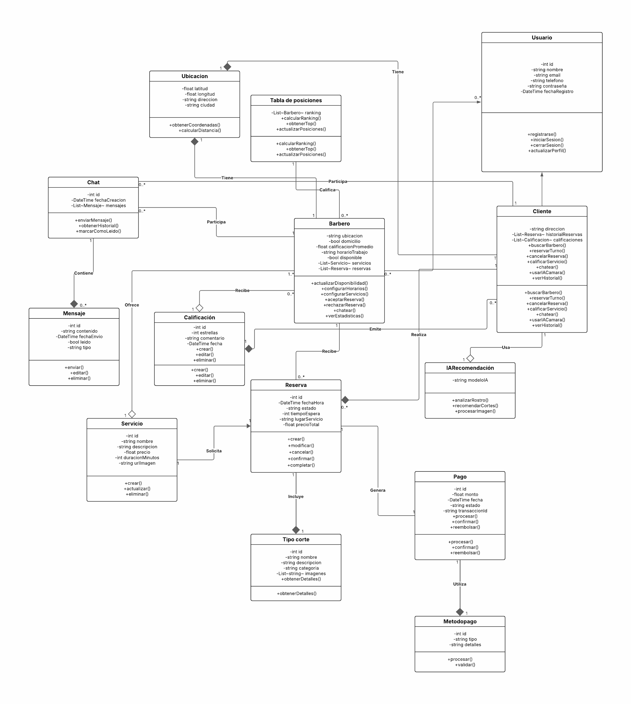
| Rol | Descripción | Permisos principales |
|---|---|---|
| Cliente | Busca barberos y reserva citas | Buscar, reservar, calificar, editar perfil |
| Barbero | Ofrece servicios y gestiona agenda | Gestionar horarios, servicios, portafolio, ubicación |
| Administrador | Gestiona el negocio | Usuarios, servicios, barberos, citas, verificaciones |
#### RF001 - Registrar barbero
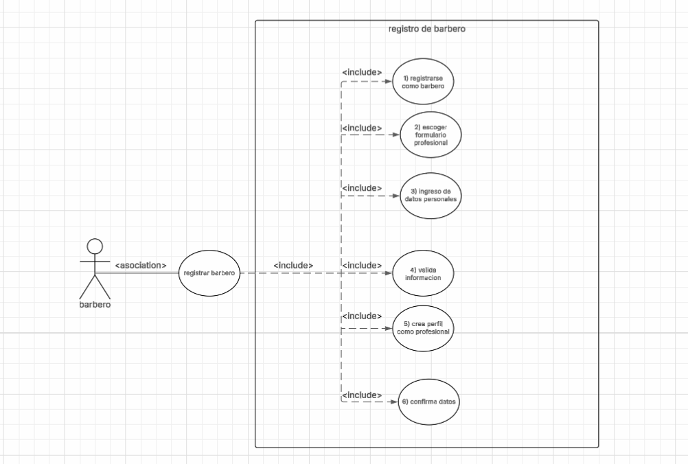
| Campo | Detalle |
|---|---|
| Nombre del caso de uso | Registrar barbero |
| Actor(es) | Barbero, sistema |
| Descripción | Permite a un barbero crear su perfil profesional. |
| Flujo principal | Seleccionar "Registrarse como Barbero" → completar datos personales, especialidad, experiencia, descripción, diploma y fotos → sistema valida → crea perfil → envía confirmación. |
| Resultado esperado | Barbero registrado con perfil profesional activo o pendiente de verificación. |
#### RF002 - Registrar cliente
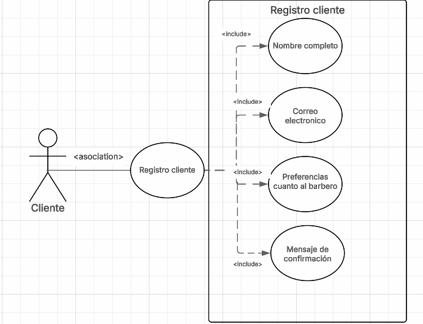
| Campo | Detalle |
|---|---|
| Nombre del caso de uso | Registrar cliente |
| Actor(es) | Cliente |
| Descripción | Permite crear una cuenta como cliente. |
| Flujo principal | Seleccionar "Registrarse como Cliente" → completar datos básicos → sistema valida → crea cuenta → envía confirmación. |
| Resultado esperado | Cliente registrado exitosamente. |
#### RF003 - Inicio de sesión (barbero)
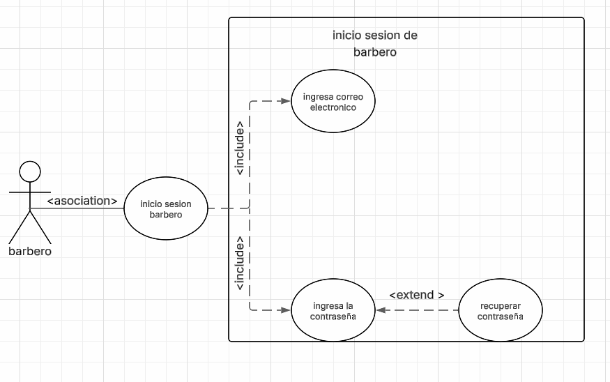
| Campo | Detalle |
|---|---|
| Nombre del caso de uso | Inicio de sesión (barbero) |
| Actor(es) | Barbero |
| Descripción | Permite al barbero acceder a su panel profesional. |
| Flujo principal | Ingresar correo y contraseña → sistema valida → acceso al panel. |
| Resultado esperado | Inicio de sesión exitoso. |
#### RF004 - Inicio de sesión (cliente)
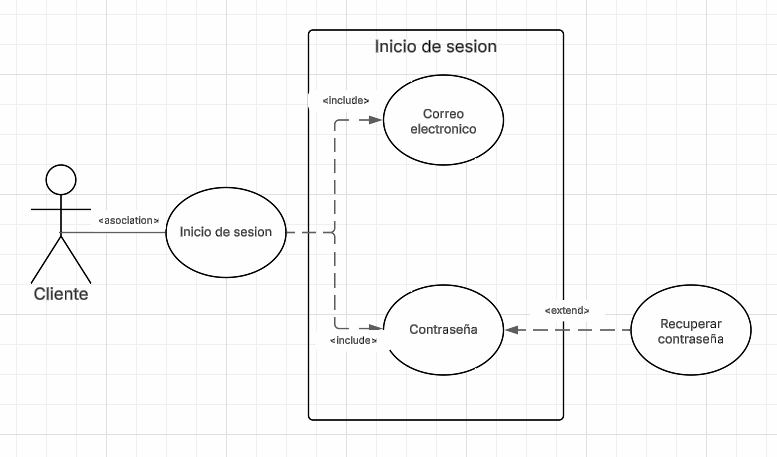
| Campo | Detalle |
|---|---|
| Nombre del caso de uso | Inicio de sesión (cliente) |
| Actor(es) | Cliente |
| Descripción | Permite al cliente acceder a la app. |
| Flujo principal | Ingresar correo y contraseña (o Google) → sistema valida → acceso al panel. |
| Resultado esperado | Inicio de sesión exitoso. |
#### RF005 - Recuperar contraseña
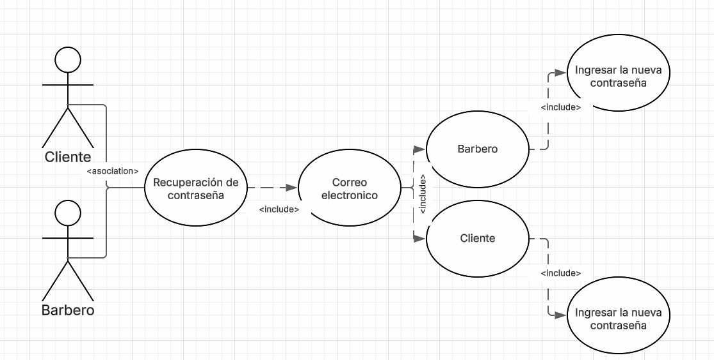
| Campo | Detalle |
|---|---|
| Nombre del caso de uso | Recuperar contraseña |
| Actor(es) | Barbero, cliente |
| Descripción | Permite restablecer la contraseña olvidada. |
| Flujo principal | Ingresar correo → sistema envía código → ingresar código y nueva contraseña → confirmar. |
| Resultado esperado | Contraseña restablecida exitosamente. |
#### RF006 - Perfil del barbero
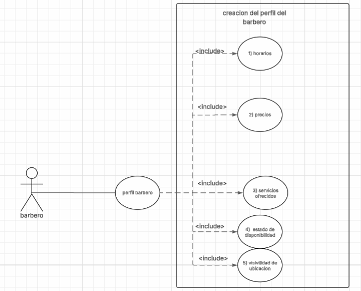
| Campo | Detalle |
|---|---|
| Nombre del caso de uso | Perfil del barbero |
| Actor(es) | Barbero |
| Descripción | Permite gestionar horarios, datos personales y laborales. |
| Flujo principal | Editar información personal, profesional, horarios, precios, servicios, ubicación, diploma. |
| Resultado esperado | Datos actualizados exitosamente. |
#### RF007 - Perfil del cliente
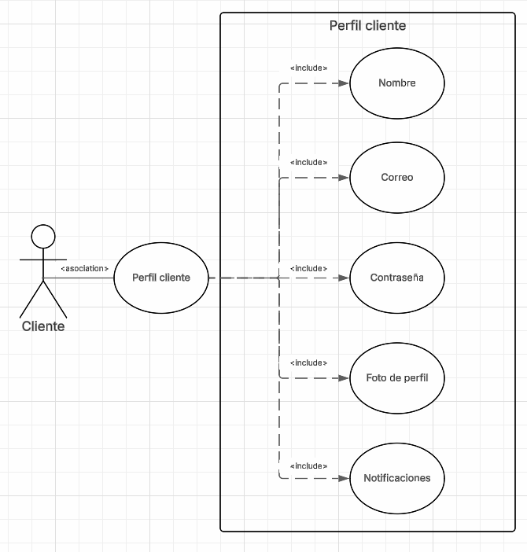
| Campo | Detalle |
|---|---|
| Nombre del caso de uso | Perfil del cliente |
| Actor(es) | Cliente |
| Descripción | Permite organizar el perfil del cliente. |
| Flujo principal | Editar información personal, preferencias de notificaciones. |
| Resultado esperado | Datos actualizados exitosamente. |
#### RF008 - Buscar barbero
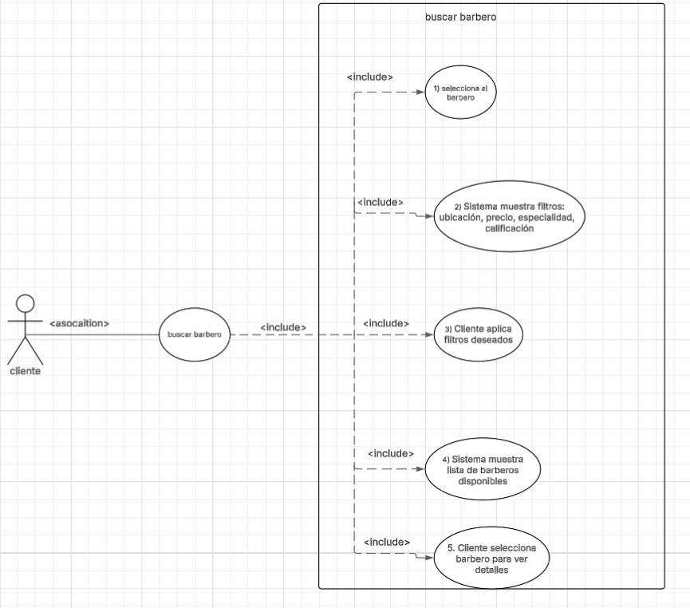
| Campo | Detalle |
|---|---|
| Nombre del caso de uso | Buscar barbero |
| Actor(es) | Cliente |
| Descripción | Permite encontrar barberos según criterios. |
| Flujo principal | Seleccionar "Buscar Barberos" → aplicar filtros (ubicación, precio, especialidad, calificación) → sistema muestra lista → seleccionar barbero. |
| Resultado esperado | Lista de barberos filtrados. |
#### RF009 - Reservar turno
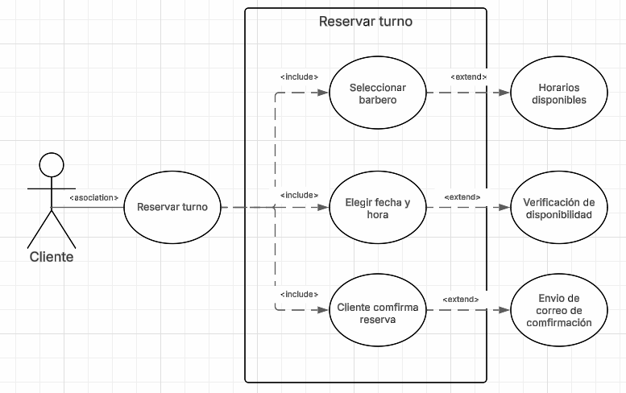
| Campo | Detalle |
|---|---|
| Nombre del caso de uso | Reservar turno |
| Actor(es) | Cliente |
| Descripción | Permite reservar un turno con un barbero. |
| Flujo principal | Seleccionar barbero → ver horarios disponibles → elegir fecha y hora → sistema verifica disponibilidad → confirmar reserva → sistema notifica a cliente y barbero. |
| Resultado esperado | Turno reservado exitosamente. |
#### RF010 - Gestionar horarios
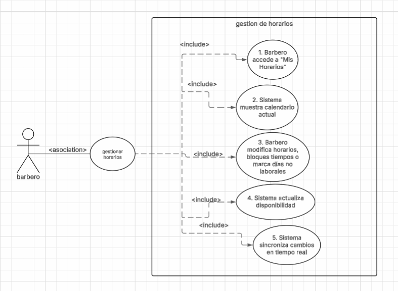
| Campo | Detalle |
|---|---|
| Nombre del caso de uso | Gestionar horarios |
| Actor(es) | Barbero |
| Descripción | Permite gestionar horarios de trabajo y disponibilidad. |
| Flujo principal | Acceder a "Mis Horarios" → modificar horarios, bloques de tiempo o marcar días no laborales → sistema actualiza disponibilidad. |
| Resultado esperado | Horarios actualizados correctamente. |
#### RF011 - Chat (asesor de IA)
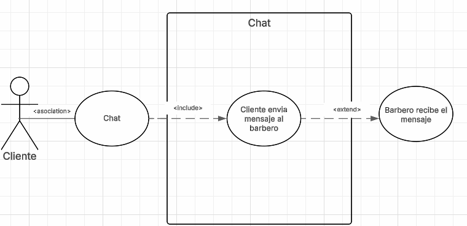
| Campo | Detalle |
|---|---|
| Nombre del caso de uso | Chat (asesor de IA) |
| Actor(es) | Cliente, barbero |
| Descripción | Permite consultar al asesor de estilo con IA. |
| Flujo principal | Escribir pregunta o subir foto → IA analiza y responde con recomendaciones basadas en el catálogo. |
| Resultado esperado | Respuesta generada exitosamente. |
#### RF012 - Sistema de calificación
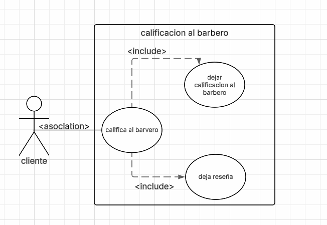
| Campo | Detalle |
|---|---|
| Nombre del caso de uso | Sistema de calificación |
| Actor(es) | Cliente |
| Descripción | Permite dejar calificación (1 a 5 estrellas) y reseña al barbero. |
| Flujo principal | Calificar con estrellas → escribir comentario opcional → publicar. |
| Resultado esperado | Comentario y calificación publicados. |
#### RF013 - Recomendación de corte por IA
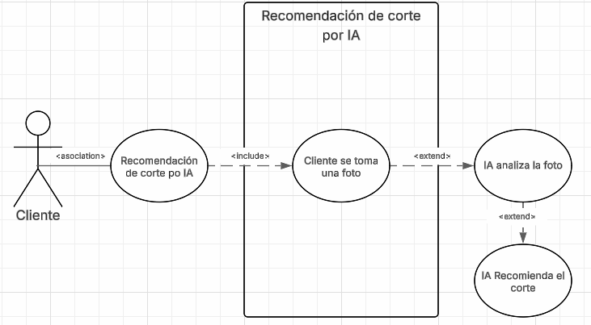
| Campo | Detalle |
|---|---|
| Nombre del caso de uso | Recomendación de corte por IA |
| Actor(es) | Cliente |
| Descripción | Ayuda a clientes indecisos a escoger un corte mediante análisis de una foto. |
| Flujo principal | Subir foto → IA analiza el rostro → IA recomienda corte. |
| Resultado esperado | Recomendación de corte generada. |
| ID | Nombre | Propósito | Descripción | Prioridad |
|---|---|---|---|---|
| RNF001 | Autenticación | Verificar identidad del usuario | Login con correo/contraseña y Google; tokens JWT | Alta |
| RNF002 | Seguridad | Proteger la información | Hash bcrypt, HTTPS, RLS en Supabase, rate limiting | Alta |
| RNF003 | Rendimiento | Respuesta rápida | Tiempo de respuesta < 3 segundos en operaciones comunes | Media |
| RNF004 | Usabilidad | Facilidad de uso | Interfaz intuitiva, accesible, con feedback claro | Alta |
| RNF005 | Confiabilidad | Operación sin errores | Manejo de errores y reintentos; logs en Sentry | Media |
| RNF006 | Disponibilidad | Servicio disponible | Backend en Render con reinicio automático | Media |
| RNF007 | Mantenibilidad | Facilidad de cambio | Código modular, pruebas unitarias | Media |
| RNF008 | Privacidad | Protección de datos | Política de privacidad, eliminación de datos, cifrado en tránsito | Alta |
*Documento mejorado. Versión 1.1.*